Press, Mix & Play (“融音” in Chinese) is a interactive installation design for Columbus Park at Chinatown in NYC. The goal of this project is to give Chinese elder people a opportunity to communicate with other age groups, and get a sense of belonging on this foreign land.
I’m the leader, user researcher and interaction designer in the group.
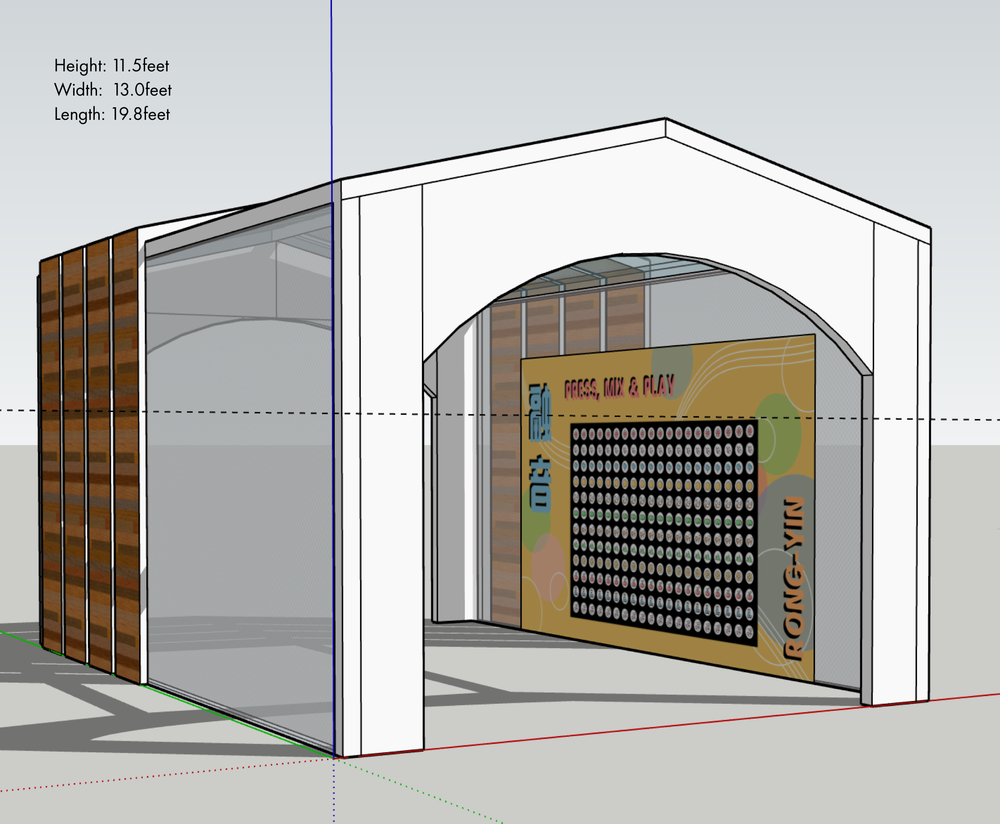 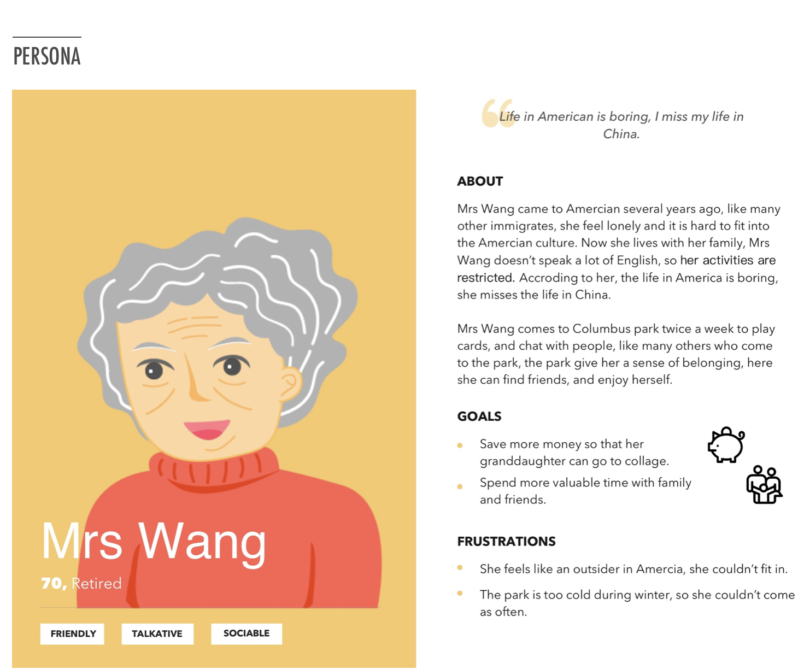
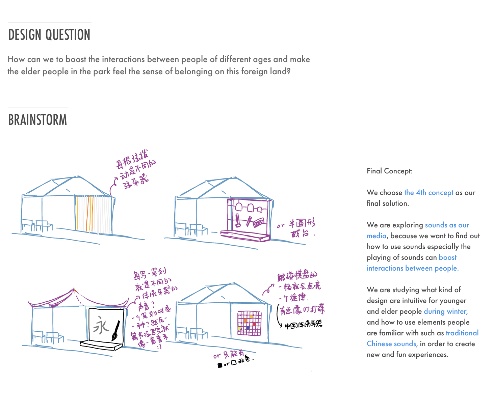
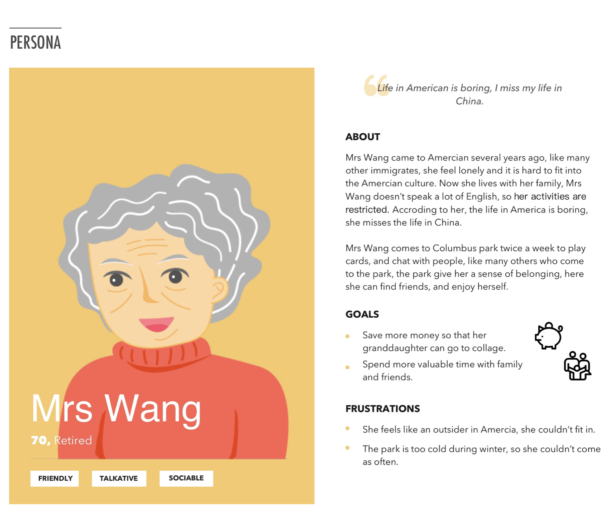
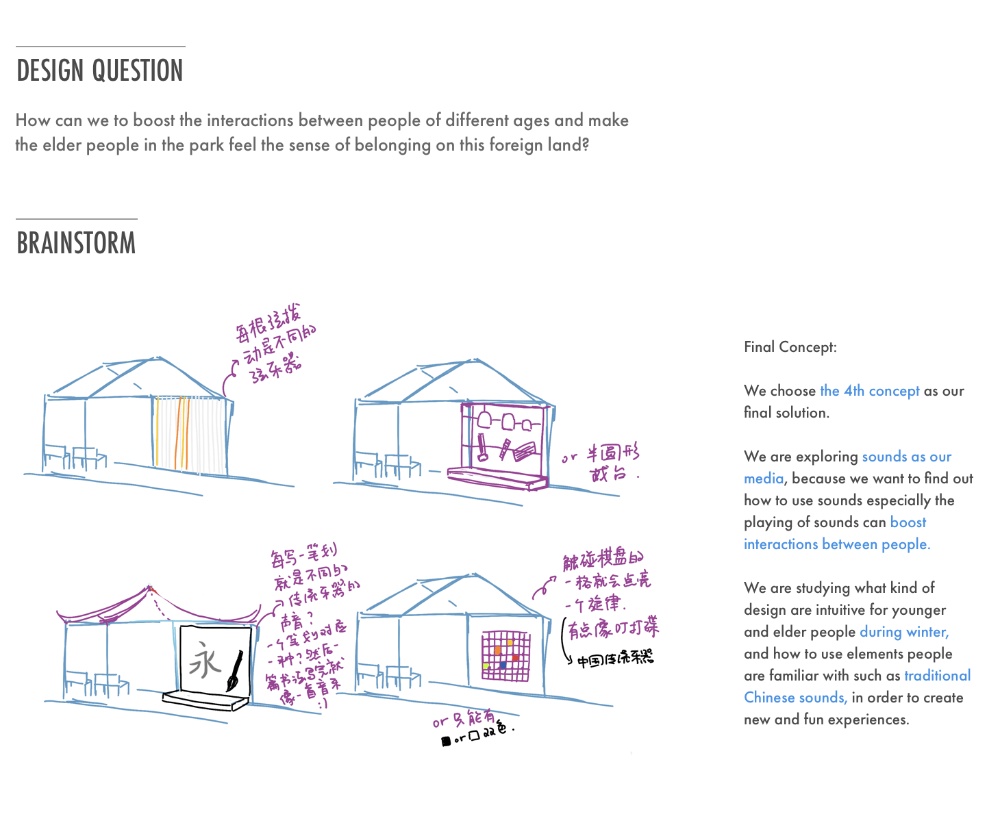
 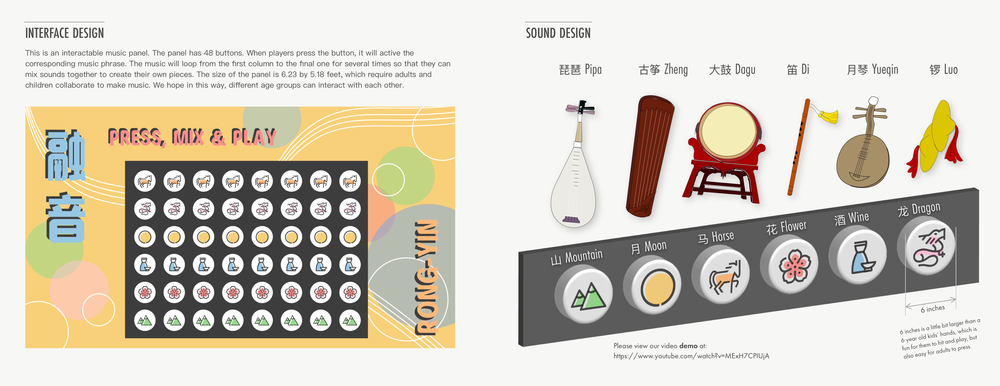
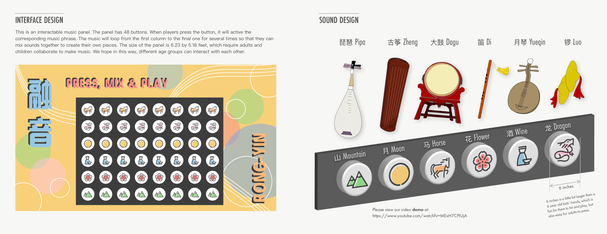
 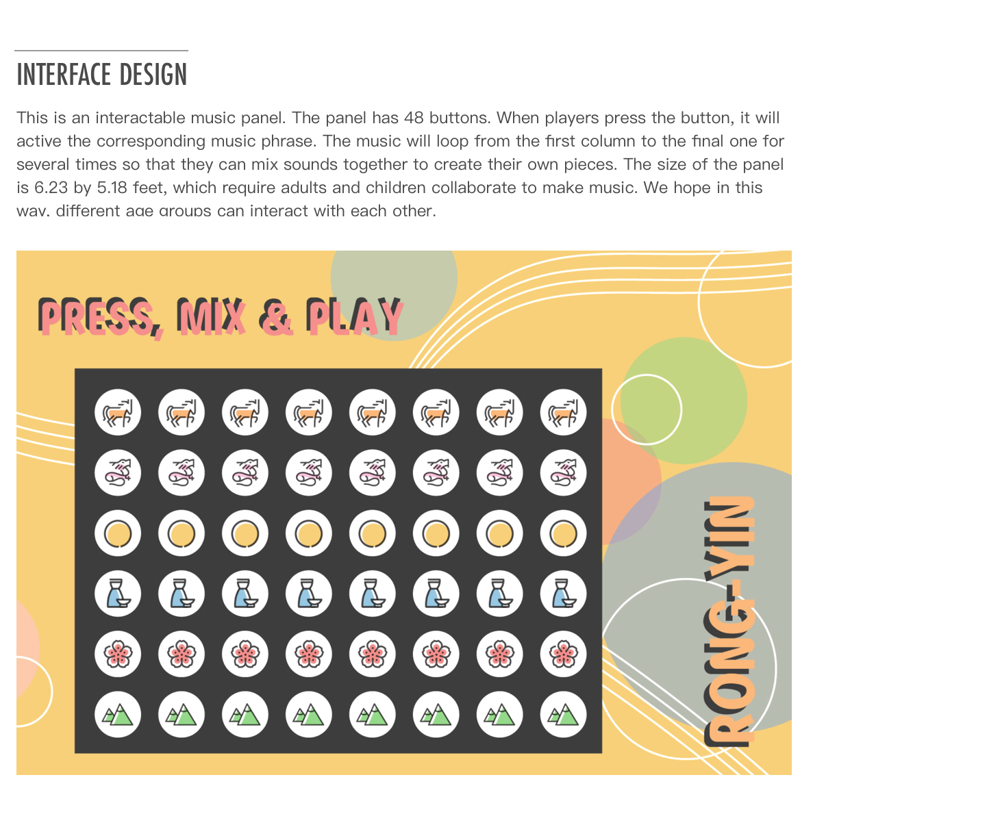
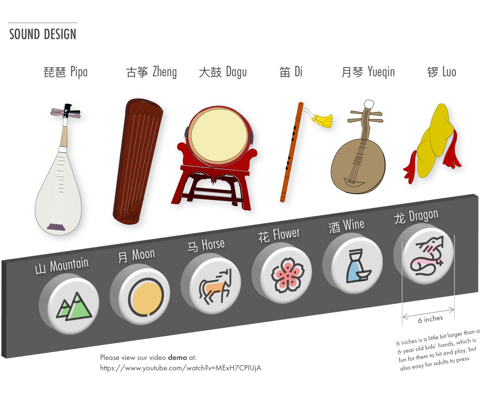
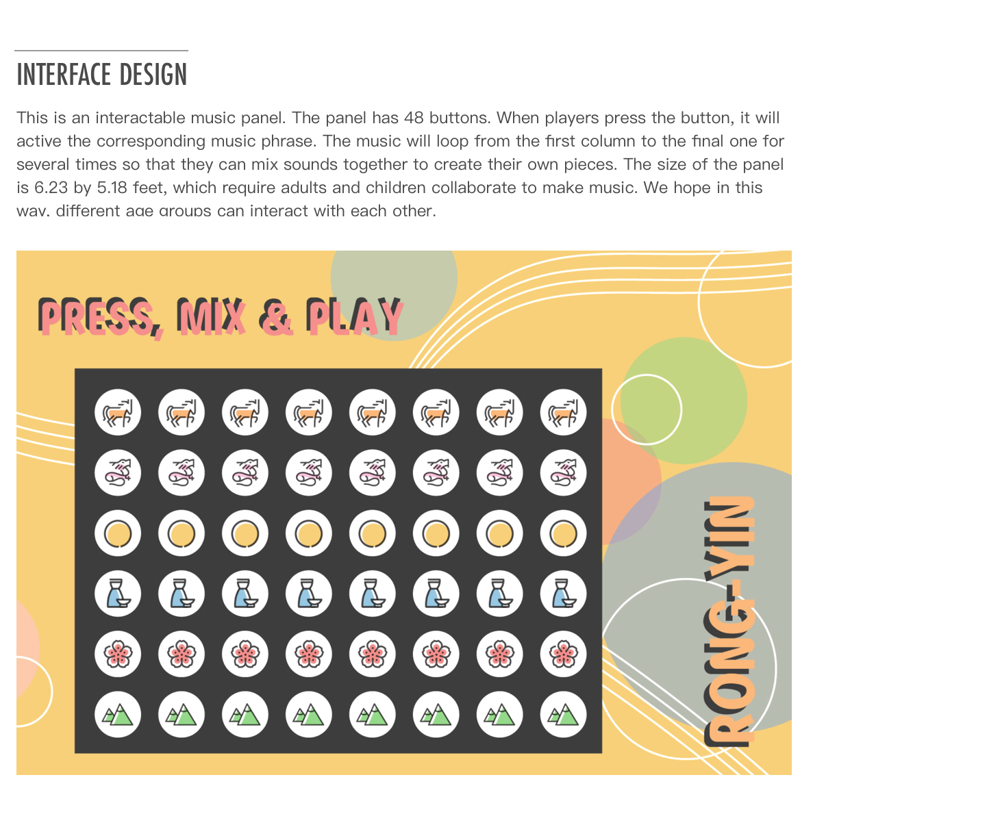
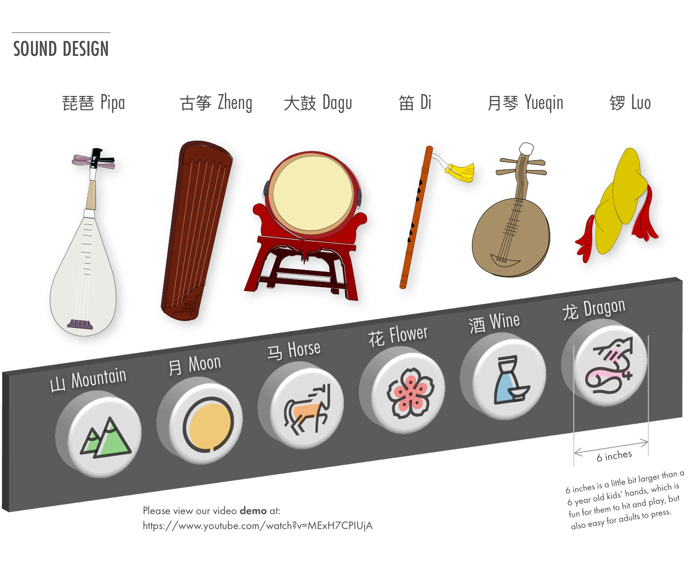